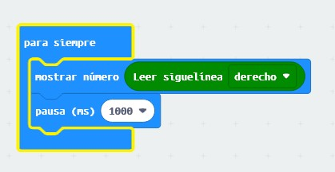
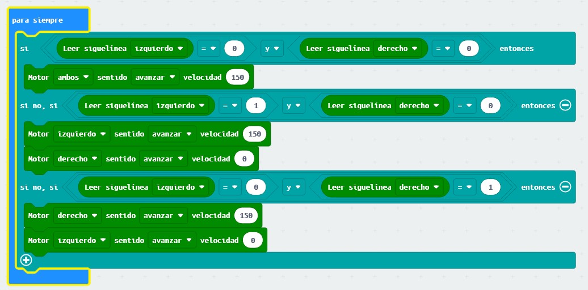
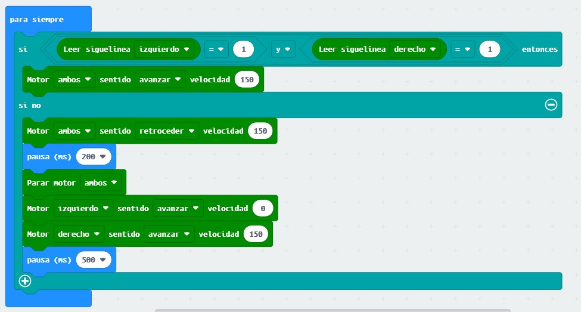

Para comprobar el funcionamiento del sensor y saber los valores que entrega según pase por una superficie oscura o clara.
Para ello, se va a crear el siguiente algoritmo
Para siempre.
Mostrar en la matriz LED el valor del siguelínea derecho
El código realizado con Makecode es el siguiente:

Fuente propia(Dominio público)
Al probarlo, se comprueba que cuando se encuentra sobre una superficie blanca nos ofrece el valor de 1 y cuando está en una superficie negra nos entrega un valor 0.
Robot siguelíneas
En esta práctica, se va a programar el robot para que se desplace por encima de una línea negra y la siga.
Se tiene que diseñar un circuito que disponga de una línea de, aproximadamente, 1,5 cm de ancho sobre un fondo blanco.
El algoritmo que se tendrá que realizar será el siguiente:
Para siempre,
Si se cumple la condición de que el sensor siguelíneas izquierdo y derecho detecta negro (es decir, un valor 0),
los dos motores avanzan a una determinada velocidad,
Si se cumple la condición de que el sensor siguelíneas izquierda detecta blanco (1) y el derecho negro (0),
el motor izquierdo avanzará y el derecho se detendrá, provocando el giro del robot hacia la derecha, para de nuevo, detectar los dos sensores la línea negra,
Si se cumple la condición de que el sensor siguelíneas izquierdo detecta negro (0) y el derecho blanco (1),
el motor izquierdo se detendrá y el derecho avanzará, provocando el giro del motor hacia la izquierda, para de nuevo, detectar los dos sensores la línea negra y continuar avanzando.
El código que se tendrá que realizar en Makecode es:

Fuente propia(Dominio público)
Tatami
Este proyecto consiste en programar el robot para que no pueda abandonar un tatami, p.e. circular, delimitado por una línea negra. El robot al detectar la línea retrocederá y girará para buscar una nueva trayectoria que seguirá hasta que encuentre, de nuevo, una línea negra.
El algoritmo que se debe de realizar es el siguiente:
Para siempre,
Si el lector siguelíneas izquierdo y derecho detecta el color blanco (un valor 1),
avanzará el robot,
si no (y en este bloque se cumple alguna condición de que algún sensor siguelínea o los dos detectan negro (0)),
el robot se parará,
retrocederá un determinado tiempo, y
girará hacia un lado,
y de nuevo volverá a comenzar el proceso.
El código realizado con Makecode es el que se muestra a continuación:

Fuente propia(Dominio público)
Contador de líneas
Otro proyecto que se puede plantear es el hacer que el robot maqueen cuente líneas.
El algoritmo que se debería de realizar es el siguiente:
Definir una variable llamada "Contador"
Al iniciar, establecer la variable "Contador" con un valor 0.
Para siempre,
Si la variable "Contador" tiene un valor igual a 2,
los motores se detendrán,
Si no, se establecerá otro condicional
Si algún siguelíneas (izquierda o derecha) detecta una valor negro,
Cambiar la variable "Contador" por un 1 (es decir, sumarle al valor anterior un 1),
Parar motores unos ms,
Avanzar los motores unos pocos ms (para evitar que vuelva el contador a sumar 1 y así sucesivamente) para que salga de la línea,
Si no detecta línea,
Avanzar los motores hacia adelante.
El código realizado con Makecode sería el siguiente: